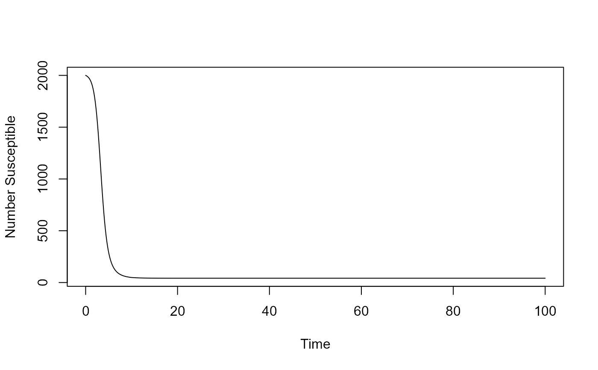

Simulation of a compartmental infectious disease transmission model to study the reproductive number
Source:R/simulate_idcontrolmultioutbreak_ode.R
simulate_idcontrolmultioutbreak_ode.RdSimulation of a basic SIR compartmental model with these compartments: Susceptibles (S), Infected/Infectious (I), Recovered and Immune (R).
The model is assumed to be in units of months when run through the Shiny App. However as long as all parameters are chosen in the same units, one can directly call the simulator assuming any time unit.
Usage
simulate_idcontrolmultioutbreak_ode(
S = 1000,
I = 1,
R = 0,
b = 0.001,
g = 1,
f = 0.3,
tstart = 10,
tend = 50,
tnew = 50,
tmax = 100
)Arguments
- S
: initial number of susceptible hosts : numeric
- I
: initial number of infected hosts : numeric
- R
: initial number of recovered hosts : numeric
- b
: rate of new infections : numeric
- g
: rate of recovery : numeric
- f
: strength of intervention effort : numeric
- tstart
: time at which intervention effort starts : numeric
- tend
: time at which intervention effort ends : numeric
- tnew
: time at which new infected enter : numeric
- tmax
: maximum simulation time : numeric
Value
This function returns the simulation result as obtained from a call to the deSolve ode solver.
Details
A compartmental ID model with several states/compartments is simulated as a set of ordinary differential equations. The function returns the output from the odesolver as a matrix, with one column per compartment/variable. The first column is time. The model implement basic processes of infection at rate b and recovery at rate g. Treatment is applied, which reduces b by the indicated proportion, during times tstart and tend. At time intervals given by tnew, a new infected individual enters the population. The simulation also monitors the number of infected and when they drop below 1, they are set to 0.
Warning
This function does not perform any error checking. So if you try to do something nonsensical (e.g. negative values or fractions > 1), the code will likely abort with an error message.
See also
The UI of the app 'Multi Outbreak ID Control', which is part of the DSAIDE package, contains more details.
Examples
# To run the simulation with default parameters just call the function:
result <- simulate_idcontrolmultioutbreak_ode()
# To choose parameter values other than the standard one,
# specify the parameters you want to change, e.g. like such:
result <- simulate_idcontrolmultioutbreak_ode(S = 2000, I = 10, tmax = 100, g = 0.5)
# You should then use the simulation result returned from the function, like this:
plot(result$ts[ , "time"],result$ts[ , "S"],xlab='Time',ylab='Number Susceptible',type='l')
